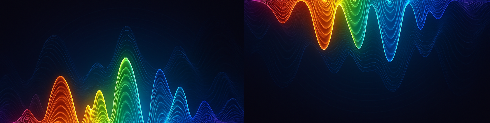

¿Por qué tu voz suena distinta a la de los demás?
Lo que oyes de ti mismo es una ilusión auditiva. Descubre qué hay detrás del timbre, las notas y tus armónicos.

¿Qué es el timbre de la voz?
El timbre es la "huella sonora" única de cada voz. Aunque dos personas canten la misma nota, suenan diferente por una combinación de factores como:
- La forma y tensión de las cuerdas vocales (que determinan la frecuencia fundamental de tu voz).
- Las cavidades resonantes: garganta, boca, nariz y pecho (que actúan como filtros y amplificadores naturales).
- La forma de articular: cómo usas labios, lengua y mandíbula.
- Y sobre todo: la composición y el patrón de sus armónicos.
Dato curioso: Las "cuerdas vocales" no son cuerdas... ¡sino pliegues musculares que vibran como labios cerrados!
¿Se puede cambiar el timbre?
Sí, el timbre de la voz puede modularse e incluso modificarse mediante:
- Entrenamiento vocal y técnicas de colocación y resonancia.
- Terapia del habla y ejercicios específicos para moldear la voz.
- Procesamiento digital o voice changers para alterar el sonido en tiempo real.
- Modelos de Inteligencia Artificial (IA) capaces de clonar y sintetizar voces con gran precisión.
La ilusión auditiva: ¿Por qué mi voz suena rara en una grabación?
La razón por la que tu propia voz en una grabación te suena tan distinta (o a veces "rara") se debe a cómo la percibes cuando hablas en tiempo real, comparado a cómo la escuchan los demás. Esto es lo que llamamos la "ilusión auditiva":
- Cuando hablas: Percibes tu voz a través de dos vías simultáneas. Primero, por conducción aérea, donde las ondas sonoras viajan por el aire hasta tus oídos, igual que a los demás. Pero, además, la vibración de tus cuerdas vocales resuena directamente a través de los huesos de tu cráneo hasta el oído interno, un proceso llamado conducción ósea. Esta vía interna añade frecuencias bajas y una resonancia que enriquece el sonido que oyes de ti mismo.
- Cuando te escuchan (o en una grabación): Los demás, y cualquier dispositivo de grabación, solo captan tu voz por conducción aérea. No perciben esa resonancia interna que tú sí. Por eso, al escuchar una grabación, te parece "extraña" o "distinta", porque estás experimentando tu voz casi exclusivamente por la vía aérea, tal como la escucha el resto del mundo, sin esa resonancia ósea a la que estás acostumbrado.
Frecuencias de notas musicales y tu voz
En música, la altura de una nota se define por su frecuencia fundamental (F0). En el sistema temperado, la nota La4 = 440 Hz es un estándar. La F0 de tu voz es la frecuencia principal a la que vibran tus cuerdas vocales, y es lo que determina la "nota" o la altura de tu habla o canto.
| Nota | Nombre | Frecuencia (Hz) |
|---|---|---|
| Do | C4 | 261.63 |
| Re | D4 | 293.66 |
| Mi | E4 | 329.63 |
| Fa | F4 | 349.23 |
| Sol | G4 | 392.00 |
| La | A4 | 440.00 |
| Si | B4 | 493.88 |
| Do | C5 | 523.25 |
Cómo se calculan las frecuencias: el exponente $ \frac{n - 49}{12} $
Para cualquier nota en el sistema temperado, su frecuencia ($f$) se puede calcular a partir de una nota de referencia (como La4 = 440 Hz) con la siguiente fórmula: $f(n) = 440 \times 2^{((n - 49)/12)}$
Donde $n$ es el número de la nota, siendo La4 = 49. Por ejemplo, Do4 = 40, y da aproximadamente 261.63 Hz. La diferencia en el tamaño y la tensión de las cuerdas vocales es la razón principal de que hombres, mujeres y niños tengan rangos de voz diferentes (F0 promedio más baja en hombres, más alta en mujeres y niños).
El exponente $\frac{n - 49}{12}$ se usa porque en una octava hay 12 semitonos (C → C♯ → D → … → B → C). Cada semitono representa una razón constante de frecuencia: $r = 2^{1/12} \approx 1.05946$. Entonces, cada nota está a una distancia de $r$ veces la frecuencia de la nota anterior, creando una progresión geométrica.
Por ejemplo:
- Si La4 = 440 Hz
- Entonces La♯4 $= 440 \times 2^{1/12} \approx 466.16\ \text{Hz}$
- Si4 $= 440 \times 2^{2/12} \approx 493.88\ \text{Hz}$
¿Por qué se usa 440 Hz como referencia?
La afinación a 440 Hz para La4 no siempre fue un estándar. Durante siglos, las afinaciones variaban significativamente entre culturas y épocas, e incluso entre orquestas. El La4 = 440 Hz fue adoptado como estándar internacional en 1939 (y confirmado en 1955 por la ISO), con el objetivo de uniformar la afinación de instrumentos y producciones musicales y audiovisuales a nivel global.
🎵 La Arquitectura del Sonido: Octavas, Semitonos y Armónicos
Para entender por qué la música occidental se estructura con 12 notas por octava y cómo esto se relaciona con tu voz, necesitamos explorar la base física del sonido.
1. La base está en los armónicos naturales
Cuando haces sonar una cuerda de guitarra, un tubo de flauta o las cuerdas vocales, no vibra solo en una frecuencia fundamental. También vibra, de forma simultánea y más débil, en una serie de armónicos (o sobretonos), que son múltiplos enteros de esa frecuencia fundamental.
Por ejemplo, si la nota fundamental es Do (C), suenan también:
- Do una octava arriba ($2 \times$ la fundamental)
- Sol ($3 \times$ la fundamental)
- Do más agudo ($4 \times$ la fundamental)
- Mi ($5 \times$ la fundamental)
- Sol ($6 \times$ la fundamental)
- Si♭ ($7 \times$ la fundamental, que es un poco "desfasado" del Si♭ que usamos en el piano)
- Y así sucesivamente...
Estos armónicos no están distribuidos de forma lineal, pero forman relaciones de frecuencia simples (como 2:1 para la octava, 3:2 para la quinta justa, 5:4 para la tercera mayor) que suenan particularmente consonantes y agradables al oído humano. De ahí nace la idea de que ciertas combinaciones de sonidos suenan "bien", como las octavas, quintas y terceras.
2. Doce notas: Dividiendo la octava en partes iguales (el temperamento igual)
La música occidental adoptó un sistema llamado temperamento igual que divide la octava (es decir, una frecuencia multiplicada por 2) en 12 partes iguales en una escala logarítmica. Esto significa que la proporción de frecuencia entre cada semitono (el paso más pequeño entre notas adyacentes) es siempre la misma, $2^{1/12}$.
Este sistema permite una enorme versatilidad:
- Tocar en cualquier tonalidad manteniendo los mismos intervalos relativos entre las notas.
- Afinar instrumentos como el piano o la guitarra, que no pueden cambiar su afinación entre piezas o canciones garantizando que suenen bien en cualquier clave.
- Ofrece un compromiso óptimo entre la precisión matemática y la versatilidad práctica para la composición y ejecución musical.
Pero no es la única opción: Otras culturas musicales usan sistemas diferentes, como escalas de 5 notas (pentatónica), 7 notas (diatónica) o incluso 24 (cuartos de tono en música árabe).
¿Por qué "subir" por octavas suena a la misma nota?
Una octava es cuando se duplica la frecuencia de una nota. Por ejemplo:
- Do3 = 130.81 Hz
- Do4 = 261.63 Hz (el doble de Do3)
- Do5 = 523.25 Hz (el doble de Do4)
Aunque son frecuencias y, por tanto, "alturas" distintas, nuestro oído las percibe como la “misma nota” pero en un registro más agudo o grave. Esto se debe a cómo nuestro sistema auditivo procesa los armónicos: las notas separadas por una octava comparten muchos de sus armónicos, haciendo que el cerebro las agrupe como equivalentes en calidad tonal, pero con distinto “registro” o "altura". ¡Esta percepción es universal! Incluso los bebés y culturas que nunca han oído música occidental reconocen la equivalencia de octavas.
🎼Profundizando en los Armónicos: ¿Qué notas aparecen en tu voz?
Cuando cantas una nota, no solo produces su frecuencia fundamental. Tu voz genera una forma de onda compleja que se puede descomponer en la fundamental y una serie de armónicos. Estos armónicos son otras notas que suenan simultáneamente y contribuyen a la riqueza y el timbre de tu voz.
Veamos los primeros armónicos (hasta el número 16) para la fundamental Do (C). El patrón de intervalos que forman estos armónicos se repite para cualquier otra nota fundamental.
| Nº Armónico | Proporción | Frecuencia relativa | Nota aproximada | Intervalo desde la Fundamental |
|---|---|---|---|---|
| 1 | 1:1 | 1.00× | Do (C) | Fundamental |
| 2 | 2:1 | 2.00× | Do (C) | Octava |
| 3 | 3:1 | 3.00× | Sol (G) | Quinta Justa |
| 4 | 4:1 | 4.00× | Do (C) | Doble Octava |
| 5 | 5:1 | 5.00× | Mi (E) | Tercera Mayor |
| 6 | 6:1 | 6.00× | Sol (G) | Quinta Justa |
| 7 | 7:1 | 7.00× | Si♭ (aprox.) | Séptima menor "natural" |
| 8 | 8:1 | 8.00× | Do (C) | Triple Octava |
| 9 | 9:1 | 9.00× | Re (D) | Segunda Mayor |
| 10 | 10:1 | 10.00× | Mi (E) | Tercera Mayor |
| 11 | 11:1 | 11.00× | Fa♯ (aprox.) | Tritono amplio |
| 12 | 12:1 | 12.00× | Sol (G) | Quinta Justa |
| 13 | 13:1 | 13.00× | La♭ (aprox.) | Sexta menor natural |
| 14 | 14:1 | 14.00× | Si♭ (aprox.) | Séptima menor |
| 15 | 15:1 | 15.00× | Si (B) | Séptima mayor |
| 16 | 16:1 | 16.00× | Do (C) | Cuádruple Octava |
**Notas principales del acorde natural de Do:** Al observar los armónicos de Do, vemos que las notas que más destacan y que suenan "consonantes" son Do, Mi, Sol, Si♭, Re, Fa♯, La♭, Si. Es importante notar que algunos de estos armónicos superiores (como el Si♭ o el Fa♯ natural) no coinciden exactamente con las notas del sistema temperado, pero se aproximan lo suficiente como para ser percibidos así.
¿Y para Re, Mi, Fa...? El mismo patrón armónico
El patrón de intervalos y las relaciones entre los armónicos son consistentes, solo que se trasladan. Por ejemplo, los primeros armónicos notables de **Re (D)** serían: Re, La, F♯, Do, Mi, Sol♯, Si♭, Do♯ (manteniendo el mismo patrón de intervalos que con Do, pero partiendo desde Re).
| Nota base | Primeros armónicos notables (aproximados) |
|---|---|
| C | C, G, E, B♭, D, F♯, A♭, B |
| D | D, A, F♯, C, E, G♯, B♭, C♯ |
| E | E, B, G♯, D, F♯, A♯, C, D♯ |
| F | F, C, A, E♭, G, B, C♯ |
| G | G, D, B, F, A, C♯, D♯ |
| A | A, E, C♯, G, B, D♯, F |
| B | B, F♯, D♯, A, C♯, E, G |
🎵 ¿Por qué todo esto importa?
- Estos armónicos naturales explican por qué ciertos acordes suenan “más puros” o consonantes: porque sus notas coinciden con los sobretonos reales que se producen naturalmente.
- También revelan la base física de la mayoría de las escalas musicales occidentales, como la escala mayor, que surgen de las combinaciones más simples y consonantes derivadas de estos armónicos.
🎤 Cuando cantas "miiiiiii" y mantienes la nota...
Estás produciendo:
- La nota Mi (E) como tu frecuencia fundamental.
- Y también, de forma simultánea, todos sus armónicos naturales, aunque no los percibas conscientemente como notas separadas.
🎶 ¿Qué está sonando realmente en tu voz?
Supongamos que cantas Mi4 $\approx$ 329.63 Hz. Tu voz no genera solo una onda pura como la de un diapasón. Genera una forma de onda compleja, que se puede descomponer en:
| Componente | Frecuencia aproximada | Qué es |
|---|---|---|
| 1° armónico | 329.63 Hz | Mi (la nota que cantas) |
| 2° armónico | 659.26 Hz | Mi (1 octava arriba) |
| 3° armónico | 988.89 Hz | Si (una quinta justa por arriba) |
| 4° armónico | 1318.52 Hz | Mi (2 octavas arriba) |
| 5° armónico | 1648.15 Hz | Sol♯ (tercera mayor de Mi) |
| ... | ... | ... |
🎯 Entonces sí: estás cantando "Mi", pero suenan simultáneamente sus armónicos, que son otras notas y contribuyen a la riqueza de tu sonido.
¿Por qué no los escuchamos como notas separadas?
Porque nuestro oído y cerebro están diseñados para fusionar todos esos armónicos en una única percepción de "una nota con cierto timbre". Es una habilidad asombrosa de nuestro sistema auditivo. Pero si hicieras un álisis espectral (usando herramientas como un osciloscopio o software como Audacity), verías claramente que los armónicos están ahí, con sus frecuencias e intensidades. Prueba el analizador de espectros que tengo al final de la página.
Y aquí lo bonito:
- La presencia y el volumen relativo de los armónicos es lo que define el timbre (por eso una voz suena distinta a un violín aunque canten el mismo Mi).
- Los armónicos superiores suelen ser más débiles en intensidad, pero aún contribuyen significativamente a ese “color” único y la resonancia de tu voz.
💡 En resumen: Tu voz, una orquesta personal
La increíble diversidad de voces humanas es el resultado de la compleja interacción entre la frecuencia fundamental que producen tus cuerdas vocales, el patrón único de armónicos (determinados por la forma y el tamaño de tu laringe) y cómo estas frecuencias son filtradas y amplificadas por tus cavidades resonantes (creando los formantes). Todo esto, junto a tu forma particular de articular, construye esa "huella sonora" que te hace inconfundible. Es como si cada uno de nosotros llevara una pequeña orquesta personal en la garganta.
🎵 Analizador de Espectro y Nota en Tiempo Real
Ahora que conoces la ciencia detrás de tu voz, ¿cómo crees que cambia tu percepción al escucharla o al intentar modificarla? ¡Comparte tus reflexiones en los comentarios!